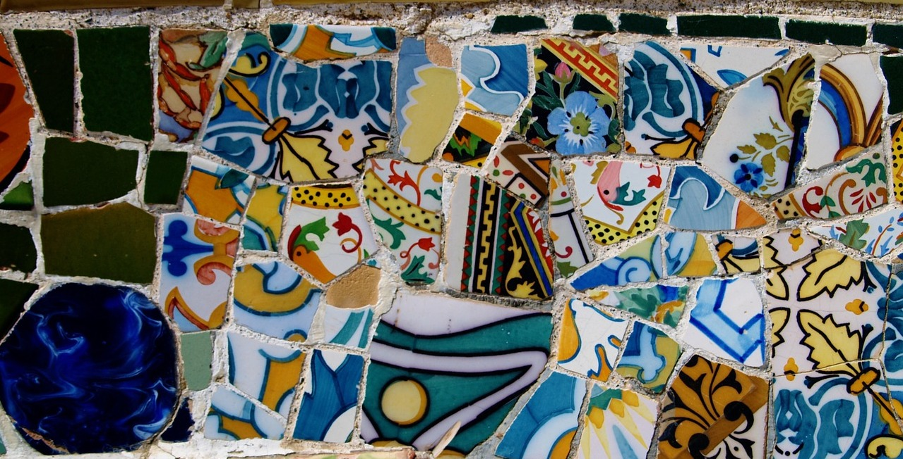

Institut Cartogràfic i Geològic de Catalunya ICGC#
Catalonia has a long tradition of seismic recording starting early in the 20th Century. The first known seismic station started in 1905 at Ebre Observatory (EBR) founded by the Jesuits near Tortosa in southern Catalonia. In 1906, the Royal Academy of Sciences of Barcelona installed a second seismic station, still active, at the Fabra Observatory (FBR), near Barcelona. Both keep their seismograms and a large amount of complementary information such as station notebooks, seismic bulletins, and correspondence. Small observatories followed soon in Olot (1907) and Girona (1909) which were operational for a few years with only some scarce data having been preserved. An improved seismic network was installed by the regional government in 1985 and a few stations from the Spanish network and academic institutions were also added.
The Catalan seismic network is presently managed by the Institut Cartogràfic i Geològic de Catalunya (ICGC).
Stations#
Location |
Code |
Latitude |
Longitude |
Timespan |
Components |
|---|---|---|---|---|---|
Lleida |
AVN |
41.88157 |
0.75060 |
1987-2000 |
1 |
Cerdanya |
CAD |
42.33909 |
1.84002 |
1987-2001 |
1 |
Ebre |
EBR |
40.820167 |
0.49394 |
1905- |
3 |
Roquetes |
EROQ |
40.82320 |
0.40883 |
1987-2003 |
3 |
Fabra |
FBR |
41.4183907 |
2.123961 |
1906-1996 |
3 |
Fontmartina |
FONT |
41.76118 |
2.43458 |
1989-2004 |
1 |
Montserrat |
MRB |
41.59388 |
1.83600 |
1987-1993 |
1 |
Olot |
OLT |
42.14320 |
2.47318 |
1985-2008 |
1 |
Sort |
SOR |
4 2.37442 |
1.13274 |
1993-2002 |
1 |
Vielha |
VIH |
42.62770 |
0.76879 |
1985-2005 |
1 |
Instrumentation#
Vincentini
Mainka
Hiller-Stuttgart
Zenithal
Grablovitz
Geotech 6102A
Sprengnether S-5000 (V&H)
Instituto Geográifico Nacional (IGN) has an exhaustive catalog of old seismographs operated at Spanish observatory sites. The catalog describes instruments operating in Spain up to the 1960’s which recorded a graphical representation of ground motion.
A catalog card has been created for every seismograph. The information has been organized into 4 blocks:
Name of instrument, location of the instrument, origin, and operational period.
Physical characteristics of the instrument: component, mass, free period, damping, friction, magnification, type of record, and record speed and pen radius and/or galvanometer free period.
Normalized magnification in poles and zeroes.
Instrument status.
Catalog is available in pdf from the IGN web page [download] .
Last accessed 10 January 2022
Recording Medium#
smoked paper
photographic paper
ink paper
thermal paper
Data Availability#
Full resolution seismograms are available upon request.
no. available |
format |
dpi |
color |
|---|---|---|---|
70,000 |
tiff |
600 or 1200 |
greyscale |
Written documents have also been scanned at 300/400 dpi.
Each institution is in charge of physical preservation. See also:
More information about the archive can be found on the ICGC website.
Contact#
For more information about this collection, please contact: xarxasismica@icgc.cat
References#
Batlló, Josep and Peter Bormann; A Catalog of Old Spanish Seismographs (2000). Seismological Research Letters 71 (5): 570–582. doi: https://doi.org/10.1785/gssrl.71.5.570
Batlló, Josep, Jose Antonio Jara, Maite Merino, Germán Solé, and Judith Unamuno (2019). Present Status of the Project for Preserving Analogue Seismograms and Other Documents at Institut Cartogràfic i Geològic de Catalunya (ICGC), IUGG2019 General Assembly, 12 July 2019, Montreal Canada, JS067-466.
Batlló, Josep, Antonio Villaseñor, Jose Antonio Jara, Maite Merino, Germán Solé, and Judith Unamuno (2021). Digital Preservation of Analogue Seismograms and Other Documents at Institut Cartogràfic i Geològic de Catalunya (ICGC), IAGA-IASPEI 2021, 21-27 August 2021, Hyderabad, India, 101.
ICGC website. https://www.icgc.cat/en/Public-Administration-and-Enterprises/Services/Recorded-earthquakes-and-seismic-information/Seismic-information-and-maps-collections/Analog-seismograms. Last accessed 10 January 2022.
Merino, Maria Teresa, Batlló, Josep, Jose Antonio Jara, Antonio Villaseñor,and Judith Unamuno (2021). Observatori Fabra available data and documentation, IAGA-IASPEI 2021, 21-27 August 2021, Hyderabad, India, 103.